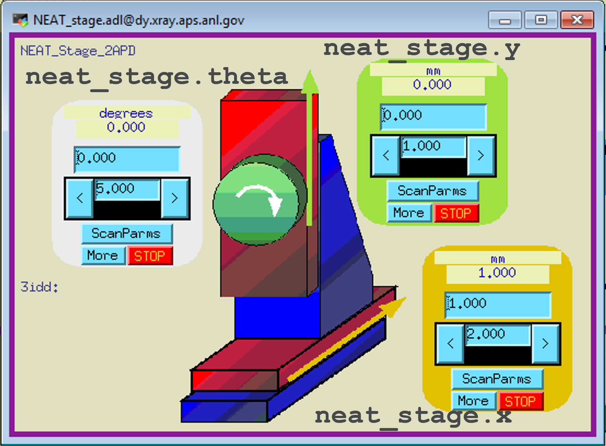

Grouping Motors with mb_creator#
It started with a question:
How to create a Device simply with just motors?
This document shows how to use the apstools.devices.mb_creator()
function to create an ophyd object that has a set of motors.
An object created by mb_creator() is intended to group its component motors. It does not provide any methods (other than those provided by its base class) that act on the components. For example, there is no .move() method or .position property.
See also
Background#
Often, we encounter equipment consisting of a set of related motors, whether it be a positioning stage, a support table, a set of slits, or some other apparatus. Take, for example the neat stage at APS station 3-ID-D. The neat stage has two translations and one rotation.

To create an ophyd object that describes the neat stage, we need a custom
subclass of ophyd.Device that names the three motors.
from ophyd import Component, Device, EpicsMotor
class NeatStage_3IDD(Device):
x = Component(EpicsMotor, "m1")
y = Component(EpicsMotor, "m2")
theta = Component(EpicsMotor, "m3")
Then, we create the ophyd object as an instance of the custom subclass:
neat_stage = NeatStage_3IDD("3idd:", name="neat_stage")
We need a new custom class for every stage. Often, they are very similar except for the axis names and EPICS PV names for the motors. In most cases, each of these custom classes is used exactly once.
Summary
We have identified a pattern and an opportunity. It started with the question:
Make (or already exists?) a device that just combines a bunch of motors using just kwargs.
Example using mb_creator()#
Let’s make that same stage using mb_creator(), a
factory function to create such structures. It is not necessary to create a
custom class, the factory function does that for us, then builds the ophyd
object.
from apstools.devices import mb_creator
neat_stage = mb_creator(
prefix="3idd:",
motors={
"x": "m1",
"y": "m2",
"theta": "m3",
},
name="neat_stage",
)
Let’s start#
The simplest object we can create is a Device structure with no motors at all.
We must provide a name= keyword argument (kwarg) for ophyd. The convention is
to use the same name as the ophyd we object to be created.
from apstools.devices import mb_creator
bundle = mb_creator(name="bundle")
bundle
MB_Device(prefix='', name='bundle', read_attrs=[], configuration_attrs=[])
The motors keyword#
Let’s add one motor axis. Call it x. Here, we provide the names of the motors as a list of names.
If motors is a list, it is converted into a dictionary where each axis is a key with an empty dictionary as its value. This allows for a consistent structure regardless of the input type. An empty dictionary is a shortcut for {"prefix": None, "class": "ophyd.SoftPositioner"}.
bundle = mb_creator(name="bundle", motors=["x"])
bundle
MB_Device(prefix='', name='bundle', read_attrs=['x'], configuration_attrs=[])
We can learn more about this axis:
bundle.x
SoftPositioner(name='bundle_x', parent='bundle', settle_time=0.0, timeout=None, egu='', limits=(0, 0), source='computed')
The apstools.devices.motor_factory.mb_creator() created a
SoftPositioner (simulated motor) since we did not provide an EPICS PV name to
be used.
Use an EPICS motor#
Let’s make a motor bundle with an EPICS motor record. We’ll need to supply the process variable (PV) name. A Python dictionary is used to provide the axis names (as the dictionary keys) and the PV value for each key. Here, we start with just one motor.
bundle = mb_creator(name="bundle", motors={"x": "gp:m1"})
bundle.wait_for_connection()
print(f"{bundle=}")
print(f"{bundle.x=}")
bundle=MB_Device(prefix='', name='bundle', read_attrs=['x', 'x.user_readback', 'x.user_setpoint'], configuration_attrs=['x', 'x.user_offset', 'x.user_offset_dir', 'x.velocity', 'x.acceleration', 'x.motor_egu'])
bundle.x=EpicsMotor(prefix='gp:m1', name='bundle_x', parent='bundle', settle_time=0.0, timeout=None, read_attrs=['user_readback', 'user_setpoint'], configuration_attrs=['user_offset', 'user_offset_dir', 'velocity', 'acceleration', 'motor_egu'])
It’s easy to see how to extend this to any number of motor axes. Here is a motor bundle with 6 EPICS motors:
bundle = mb_creator(
name="bundle",
motors={
"x": "gp:m1",
"y": "gp:m2",
"z": "gp:m3",
"roll": "gp:m4",
"pitch": "gp:m5",
"yaw": "gp:m6",
}
)
bundle.wait_for_connection()
print(f"{bundle=}")
print(f"{bundle.read()=}")
bundle=MB_Device(prefix='', name='bundle', read_attrs=['x', 'x.user_readback', 'x.user_setpoint', 'y', 'y.user_readback', 'y.user_setpoint', 'z', 'z.user_readback', 'z.user_setpoint', 'roll', 'roll.user_readback', 'roll.user_setpoint', 'pitch', 'pitch.user_readback', 'pitch.user_setpoint', 'yaw', 'yaw.user_readback', 'yaw.user_setpoint'], configuration_attrs=['x', 'x.user_offset', 'x.user_offset_dir', 'x.velocity', 'x.acceleration', 'x.motor_egu', 'y', 'y.user_offset', 'y.user_offset_dir', 'y.velocity', 'y.acceleration', 'y.motor_egu', 'z', 'z.user_offset', 'z.user_offset_dir', 'z.velocity', 'z.acceleration', 'z.motor_egu', 'roll', 'roll.user_offset', 'roll.user_offset_dir', 'roll.velocity', 'roll.acceleration', 'roll.motor_egu', 'pitch', 'pitch.user_offset', 'pitch.user_offset_dir', 'pitch.velocity', 'pitch.acceleration', 'pitch.motor_egu', 'yaw', 'yaw.user_offset', 'yaw.user_offset_dir', 'yaw.velocity', 'yaw.acceleration', 'yaw.motor_egu'])
bundle.read()=OrderedDict({'bundle_x': {'value': 0.05, 'timestamp': 1747171397.856864}, 'bundle_x_user_setpoint': {'value': 0.04999999999999987, 'timestamp': 1747171397.856864}, 'bundle_y': {'value': -0.16670000000000001, 'timestamp': 1747170542.707431}, 'bundle_y_user_setpoint': {'value': -0.16670000000000001, 'timestamp': 1747170542.707431}, 'bundle_z': {'value': 0.0, 'timestamp': 1747170542.707435}, 'bundle_z_user_setpoint': {'value': 0.0, 'timestamp': 1747170542.707435}, 'bundle_roll': {'value': 0.0, 'timestamp': 1747170542.707438}, 'bundle_roll_user_setpoint': {'value': 0.0, 'timestamp': 1747170542.707438}, 'bundle_pitch': {'value': 0.0, 'timestamp': 1746817545.842815}, 'bundle_pitch_user_setpoint': {'value': 0.0, 'timestamp': 1746817545.842815}, 'bundle_yaw': {'value': 0.0, 'timestamp': 1746817545.842817}, 'bundle_yaw_user_setpoint': {'value': 0.0, 'timestamp': 1746817545.842817}})
We can turn any of these axes into a simulator (SoftPositioner) by providing None instead of an EPICS PV. Let’s show that for roll, pitch, and yaw. Note that motors must still be a dictionary so that we can specify PVs for the x, y, and z axes.
bundle = mb_creator(
name="bundle",
motors={
"x": "gp:m1",
"y": "gp:m2",
"z": "gp:m3",
"roll": None,
"pitch": None,
"yaw": None,
}
)
bundle.wait_for_connection()
print(f"{bundle=}")
print(f"{bundle.x=}")
print(f"{bundle.roll=}")
bundle=MB_Device(prefix='', name='bundle', read_attrs=['x', 'x.user_readback', 'x.user_setpoint', 'y', 'y.user_readback', 'y.user_setpoint', 'z', 'z.user_readback', 'z.user_setpoint', 'roll', 'pitch', 'yaw'], configuration_attrs=['x', 'x.user_offset', 'x.user_offset_dir', 'x.velocity', 'x.acceleration', 'x.motor_egu', 'y', 'y.user_offset', 'y.user_offset_dir', 'y.velocity', 'y.acceleration', 'y.motor_egu', 'z', 'z.user_offset', 'z.user_offset_dir', 'z.velocity', 'z.acceleration', 'z.motor_egu'])
bundle.x=EpicsMotor(prefix='gp:m1', name='bundle_x', parent='bundle', settle_time=0.0, timeout=None, read_attrs=['user_readback', 'user_setpoint'], configuration_attrs=['user_offset', 'user_offset_dir', 'velocity', 'acceleration', 'motor_egu'])
bundle.roll=SoftPositioner(name='bundle_roll', parent='bundle', settle_time=0.0, timeout=None, egu='', limits=(0, 0), source='computed')
The prefix keyword#
When all the EPICS PVs share a common starting sequence of symbols, we can
provide that in the prefix kwarg. Here, we modify from the previous structure
to show how to use this kwarg. Note that we remove it from each of the PV
names:
bundle = mb_creator(
name="bundle",
prefix="gp:",
motors={
"x": "m1",
"y": "m2",
"z": "m3",
"roll": None,
"pitch": None,
"yaw": None,
}
)
bundle.wait_for_connection()
print(f"{bundle=}")
print(f"{bundle.x=}")
print(f"{bundle.roll=}")
bundle=MB_Device(prefix='gp:', name='bundle', read_attrs=['x', 'x.user_readback', 'x.user_setpoint', 'y', 'y.user_readback', 'y.user_setpoint', 'z', 'z.user_readback', 'z.user_setpoint', 'roll', 'pitch', 'yaw'], configuration_attrs=['x', 'x.user_offset', 'x.user_offset_dir', 'x.velocity', 'x.acceleration', 'x.motor_egu', 'y', 'y.user_offset', 'y.user_offset_dir', 'y.velocity', 'y.acceleration', 'y.motor_egu', 'z', 'z.user_offset', 'z.user_offset_dir', 'z.velocity', 'z.acceleration', 'z.motor_egu'])
bundle.x=EpicsMotor(prefix='gp:m1', name='bundle_x', parent='bundle', settle_time=0.0, timeout=None, read_attrs=['user_readback', 'user_setpoint'], configuration_attrs=['user_offset', 'user_offset_dir', 'velocity', 'acceleration', 'motor_egu'])
bundle.roll=SoftPositioner(name='bundle_roll', parent='bundle', settle_time=0.0, timeout=None, egu='', limits=(0, 0), source='computed')
The labels keyword#
Ophyd provides a labels kwarg to help categorize the various ophyd objects. It
is a Python list. There are very few reserved labels ("detectors" is used by
the %ct bluesky magic function, "motors" is also used by some convention.)
Use your own labels as best fits the situation. Multiple labels are allowed.
The ophyd registry (oregistry) can search for ophyd objects by label. Let’s show that, too.
from ophyd import Signal
from ophydregistry import Registry
oregistry = Registry()
oregistry.auto_register = True
bundle = mb_creator(
name="bundle",
prefix="gp:",
motors={"x": "m1", "y": "m2"},
labels=["bundle", "example"],
)
signal = Signal(name="signal", labels=["not EPICS"])
print(f"{oregistry.device_names=}")
print(f"{oregistry.findall(label='example')=}")
print(f"{oregistry.findall(label='not', allow_none=True)=}")
print(f"{oregistry.findall(label='not EPICS')=}")
oregistry.device_names={'signal', 'bundle'}
oregistry.findall(label='example')=[MB_Device(prefix='gp:', name='bundle', read_attrs=['x', 'x.user_readback', 'x.user_setpoint', 'y', 'y.user_readback', 'y.user_setpoint'], configuration_attrs=['x', 'x.user_offset', 'x.user_offset_dir', 'x.velocity', 'x.acceleration', 'x.motor_egu', 'y', 'y.user_offset', 'y.user_offset_dir', 'y.velocity', 'y.acceleration', 'y.motor_egu'])]
oregistry.findall(label='not', allow_none=True)=[]
oregistry.findall(label='not EPICS')=[Signal(name='signal', value=0.0, timestamp=1747267101.8723898)]
The class_bases keyword#
The factory uses ophyd.MotorBundle by default to create the ophyd object. If you want to use a different base class (or more than one), the class_bases kwarg allows you to define a list of base classes. Here, we use the ophyd.Device class:
bundle = mb_creator(
name="bundle",
motors=["x", "y", "theta"],
class_bases=["ophyd.Device"],
)
print(f"{bundle.__class__.__name__=}")
bundle.__class__.__name__='MB_Device'
To see how ophyd.Device has been used, we need to investigate the order of
base classes used by the bundle object. We can see this by printing the
Python class Method Resolution Order (MRO).
bundle.__class__.__mro__
(apstools.devices.motor_factory.MB_Device,
ophyd.device.Device,
ophyd.device.BlueskyInterface,
ophyd.ophydobj.OphydObject,
object)
As noted above, the factory does not provide additional methods such as
.move() or .position. To move any of the component motors, move them individually, such as: bundle.x.move(5). In a bluesky plan stub, they can be moved together, such as
yield from bps.move(
bundle.x, 5,
bundle.y, 2,
bundle.theta, 25.251,
)
The class_bases kwarg is a list, allowing you to
provide an additional mixin class where such methods could be added.
Let’s show an example with a custom mixin class that provides a .position
property.
from ophyd import Device
class PositionMixin(Device):
"""Report position of any component that has a position property."""
@property
def position(self) -> dict:
pos = {}
for attr in self.component_names:
cpt = getattr(self, attr)
if hasattr(cpt, "position"):
pos[attr] = cpt.position
return pos
Create our bundle object, defining the class_bases kwarg to include both
"ophyd.MotorBundle" (which will be imported by
mb_creator()) and our custom
PositionMixin.
bundle = mb_creator(
name="bundle",
prefix="gp:",
motors={"x": "m1", "y": "m2", "theta": "m3"},
class_bases=["ophyd.MotorBundle", PositionMixin],
)
bundle.wait_for_connection()
print(f"{bundle.position=}")
bundle.position={'x': 0.05, 'y': -0.16670000000000001, 'theta': 0.0}
The class_name keyword#
All the examples above created ophyd objects as instances of MB_Device. It is
possible to change that using the class_name kwarg. Let’s make an example
simulated neat stage (see above), then look at its MRO (order of base devices).
bundle = mb_creator(
name="bundle",
motors=["x", "y", "theta"],
class_name="NeatStage_Simulator",
)
bundle.__class__.__mro__
(apstools.devices.motor_factory.NeatStage_Simulator,
ophyd.epics_motor.MotorBundle,
ophyd.device.Device,
ophyd.device.BlueskyInterface,
ophyd.ophydobj.OphydObject,
object)
Advanced use#
Above, we saw that the motors kwarg can be either a list (names of the
simulated axes) or a dictionary (names and PV names). Here we show advanced use
of that dictionary. Instead of providing a PV name as a string value, we can
provide a dictionary with prefix keyword for the PV and any other keywords
accepted by the class for the axis.
Let’s demonstrate for an EPICS motor axis and a simulated axis. Comments were added for the additional terms that are not so obvious.
bundle = mb_creator(
name="bundle",
motors={
"motor": {
"prefix": "gp:m1",
"labels": ["motors", "EPICS"],
"kind": "hinted", # reported as data, plotted if named
},
"soft": {
"init_pos": 0,
"limits": [-100, 100],
"labels": ["motors", "EPICS"],
"kind": "config", # reported as configuration, not data
},
},
)
print(f"{bundle=}")
print(f"{bundle.motor=}")
print(f"{bundle.soft=}")
bundle=MB_Device(prefix='', name='bundle', read_attrs=['motor', 'motor.user_readback', 'motor.user_setpoint'], configuration_attrs=['motor', 'motor.user_offset', 'motor.user_offset_dir', 'motor.velocity', 'motor.acceleration', 'motor.motor_egu', 'soft'])
bundle.motor=EpicsMotor(prefix='gp:m1', name='bundle_motor', parent='bundle', settle_time=0.0, timeout=None, read_attrs=['user_readback', 'user_setpoint'], configuration_attrs=['user_offset', 'user_offset_dir', 'velocity', 'acceleration', 'motor_egu'])
bundle.soft=SoftPositioner(name='bundle_soft', parent='bundle', settle_time=0.0, timeout=None, egu='', limits=(-100, 100), source='computed')
In addition to EpicsMotor and SoftPositioner, it’s possible to use other
positioner classes for a “motor”.
bundle = mb_creator(
name="bundle",
prefix="zgp:",
motors={
"positioner": {
"class": "apstools.devices.PVPositionerSoftDoneWithStop",
"prefix": "gp:",
"readback_pv": "float14",
"setpoint_pv": "float4",
},
},
)
bundle.wait_for_connection()
bundle.read()
OrderedDict([('bundle_positioner', {'value': 0.0, 'timestamp': 631152000.0}),
('bundle_positioner_setpoint',
{'value': 0.0, 'timestamp': 631152000.0})])
It’s even possible to specify an axis with the EpicsSignal class. Let’s try
with just a couple PVs:
bundle = mb_creator(
name="bundle",
motors={
"calculated": {
"class": "ophyd.EpicsSignalRO",
"prefix": "gp:userCalc8.VAL",
},
"b": {
"class": "ophyd.EpicsSignal",
"prefix": "gp:userCalc8.B",
},
},
)
bundle.wait_for_connection()
bundle.read()
OrderedDict([('bundle_calculated',
{'value': 25.30143434805829, 'timestamp': 1747267101.806678}),
('bundle_b', {'value': 25.0, 'timestamp': 1747267101.806678})])
The factory-generated class will be used to create ophyd objects (instances of that class).
Here, we demonstrate a bundle that uses two different factories. It is typical at the APS where a diffractometer is mounted on a multi-axis table.
Keep in mind that a Python class factory is different from on object factory:
factory |
produces |
|---|---|
|
Creates a custom Python class which will be used to create one or more ophyd objects. |
|
Creates an ophyd object (using |
NOTE
This example is contrived. Most diffractometer installations will not expose the table motors to use within bluesky since the table axes are used to align the diffractometer in the beamline. Once aligned, the table motors are moved if the table is found to require additional alignment.
bundle = mb_creator(
name="bundle",
labels=["diffractometer"],
motors={
"psic": {
"factory": {
"function": "hklpy2.diffract.diffractometer_class_factory",
"geometry": "APS POLAR",
"solver": "hkl_soleil",
"solver_kwargs": {"engine": "hkl"},
"reals": ["mu", "eta", "chi", "phi", "nu", "delta"],
}
},
"table": {
"factory": {
"function": "apstools.devices.mb_class_factory",
"motors": ["x1", "x2", "y1", "y2", "y3", "z"],
}
},
},
)
bundle.wait_for_connection()
print(f"{bundle=}")
print(f"{bundle.psic=}")
print(f"{bundle.table=}")
bundle=MB_Device(prefix='', name='bundle', read_attrs=['psic', 'psic.beam', 'psic.beam.wavelength', 'psic.beam.energy', 'psic.h', 'psic.h.readback', 'psic.h.setpoint', 'psic.k', 'psic.k.readback', 'psic.k.setpoint', 'psic.l', 'psic.l.readback', 'psic.l.setpoint', 'psic.mu', 'psic.eta', 'psic.chi', 'psic.phi', 'psic.nu', 'psic.delta', 'table', 'table.x1', 'table.x2', 'table.y1', 'table.y2', 'table.y3', 'table.z'], configuration_attrs=['psic', 'psic.solver_signature', 'psic.beam', 'psic.beam.source_type', 'psic.beam.wavelength_units', 'psic.beam.wavelength_deadband', 'psic.beam.energy_units', 'psic.h', 'psic.k', 'psic.l', 'table'])
bundle.psic=Hklpy2Diffractometer(prefix='', name='bundle_psic', parent='bundle', settle_time=0.0, timeout=None, egu='', limits=(0, 0), source='computed', read_attrs=['beam', 'beam.wavelength', 'beam.energy', 'h', 'h.readback', 'h.setpoint', 'k', 'k.readback', 'k.setpoint', 'l', 'l.readback', 'l.setpoint', 'mu', 'eta', 'chi', 'phi', 'nu', 'delta'], configuration_attrs=['solver_signature', 'beam', 'beam.source_type', 'beam.wavelength_units', 'beam.wavelength_deadband', 'beam.energy_units', 'h', 'k', 'l'], concurrent=True)
bundle.table=MB_Device(prefix='', name='bundle_table', parent='bundle', read_attrs=['x1', 'x2', 'y1', 'y2', 'y3', 'z'], configuration_attrs=[])